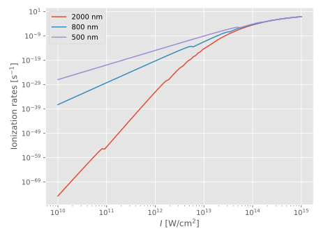

This implements the strong-field ionization formula given by PPT, i.e.
- Perelomov, A., Popov, V., & Terent'ev, M. (1966). Ionization of Atoms in an Alternating Electric Field. Soviet Physics—Journal of Experimental and Theoretical Physics, 23(5), 924–934,
with some sprinkles of ADK:
- Ammosov, M. V., Delone, N. B., & Krainov, V. P. (1986). Tunnel Ionization of Complex Atoms and of Atomic Ions in Alternating Electromagnetic Field. Soviet Physics—Journal of Experimental and Theoretical Physics, 64(6), 1191–1194
and
- Ilkov, F. A., Decker, J. E., & Chin, S. L. (1992). Ionization of atoms in the tunnelling regime with experimental evidence using hg atoms. Journal of Physics B: Atomic, Molecular and Optical Physics, 25(19), 4005–4020. http://dx.doi.org/10.1088/0953-4075/25/19/011
StrongFieldApproximation.IonizationRates.PPT — FunctionPPT(Iₚ, I, ω, ℓ, m[, Z=1])Compute the strong-field photoionization rate from an initial state with ionization potential Iₚ, angular quantum numbers ℓ & m, and a binding potential of charge Z, when subjected to monochromatic light of intensity I and angular frequency ω, using the PPT formalism (slightly generalized to effective principal quantum numbers $n^*$):
\[\begin{equation} \tag{PPT54,ADK1} w_{\ell m}(F, \omega) = I_p \abs{C_{n^*\ell^*}}^2 \sqrt{\frac{3}{2\pi}} f(\ell, m) \tilde{E}^{-(2n^* - \abs{m} - 3/2)} (1+\gamma^2)^{-n^* + \abs{m}/2 + 3/4} A_m(\omega,\gamma) \exp\left[ -\frac{g(\gamma)}{3\tilde{E}} \right], \end{equation}\]
where $\gamma$ is the Keldysh parameter, and $n^*$ the effective_n.
julia> using StrongFieldApproximation, ElectricFields, Unitful, UnitfulAtomic
julia> I = 10 .^ range(10, stop=15, length=100) * u"W/cm^2";
julia> Iau = ElectricFields.Iaustrip.(I);
julia> λ = [400u"nm", 800u"nm", 2000u"nm"]
3-element Vector{Quantity{Int64, 𝐋, Unitful.FreeUnits{(nm,), 𝐋, nothing}}}:
400 nm
800 nm
2000 nm
julia> ω = austrip.(2π*1u"c" ./ λ)
3-element Vector{Float64}:
0.11390838132237764
0.05695419066118882
0.022781676264475526
julia> Iₚ = 0.5 # Hydrogen
0.5
julia> rates = StrongFieldApproximation.IonizationRates.PPT.(Iₚ, Iau, ω', 0, 0);
Internals reference
StrongFieldApproximation.IonizationRates.A — MethodA(m, Iₚ, I, ω[; tol = √(eps()), maxterms=typemax(Int)])\[\begin{equation} \tag{PPT55} A_m(\omega,\gamma) = \frac{4}{\sqrt{3\pi}} \frac{1}{\abs{m}!} \frac{\gamma^2}{1+\gamma^2} \sum_{n\geq\nu}^\infty \exp[-\alpha(n-\nu)] w_m[\sqrt{\beta(n-\nu)}], \end{equation}\]
where $\nu$ is computed using ν.
StrongFieldApproximation.IonizationRates.C2 — Method\[\begin{equation} \tag{ADK19} \abs{C_{n^*\ell^*}}^2 = \frac{2^{2n^*}}{n^*\Gamma(n^*+\ell^*+1)\Gamma(n^*-\ell^*)} \end{equation}\]
StrongFieldApproximation.IonizationRates.Etilde — MethodEtilde(E0, Iₚ)\[\tilde{E} = \frac{E_0}{2(2I_p)^{3/2}} \equiv \frac{\sqrt{I}}{2(2I_p)^{3/2}}.\]
StrongFieldApproximation.IonizationRates.effective_n — Methodeffective_n(Iₚ, Z)Effective principal quantum number for ionization potential Iₚ and residual nuclear charge Z.
\[\begin{equation} \tag{ADK2} n^* = \frac{Z}{\sqrt{2I_p}} \end{equation}\]
StrongFieldApproximation.IonizationRates.f — Methodf(ℓ, m)Common prefactor appearing in e.g Eqs. (PPT54,59), (ADK12)
\[f(\ell, m) = \frac{(2\ell+1)(\ell+\abs{m})!} {2^{\abs{m}}(\abs{m})!(\ell-\abs{m})!}\]
StrongFieldApproximation.IonizationRates.g — Methodg(γ)\[\begin{equation} \tag{PPT33} g(\gamma) = \frac{3}{2\gamma} \left[ \left( 1+\frac{1}{2\gamma^2} \right) \arcsinh\gamma- \frac{\sqrt{1+\gamma^2}}{2\gamma} \right] \equiv \frac{3}{2\gamma} \left[ \left( 1+\frac{1}{2\gamma^2} \right) \arcsinh\gamma- \frac{1}{\beta(\gamma)} \right] \end{equation}\]
StrongFieldApproximation.IonizationRates.w — Methodw(m,x)\[\begin{equation} \tag{PPT56} w_m(x) = \frac{x^{2\abs{m}+1}}{2} \int_0^1\diff{t} \frac{\exp(-x^2t)t^{\abs{m}}}{\sqrt{1-t}} \end{equation}\]
StrongFieldApproximation.IonizationRates.α — Methodα(γ)\[\begin{equation} \tag{PPT34} \alpha(\gamma) = 2\left( \arcsinh\gamma - \frac{\gamma}{\sqrt{1+\gamma^2}} \right) \equiv 2\arcsinh\gamma - \beta(\gamma) \end{equation}\]
StrongFieldApproximation.IonizationRates.β — Methodβ(γ)\[\begin{equation} \tag{PPT56ff} \beta(\gamma) = \frac{2\gamma}{\sqrt{1+\gamma^2}} \end{equation}\]
Defined just below Eq. (PPT56).
StrongFieldApproximation.IonizationRates.ν — Methodν(Iₚ, I, ω)Number of photons of energy $\omega$ needed to reach above the ionization potential $I_p$ in the presence of a strong dressing field of intensity $I$.
\[\begin{equation} \tag{PPT26} \nu = \frac{I_p}{\omega} \left(1+\frac{1}{2\gamma^2}\right) \end{equation}\]